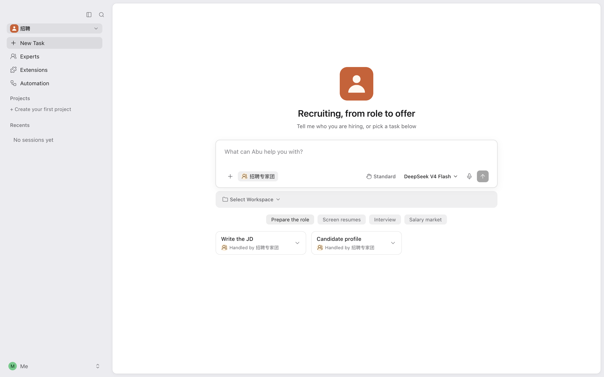
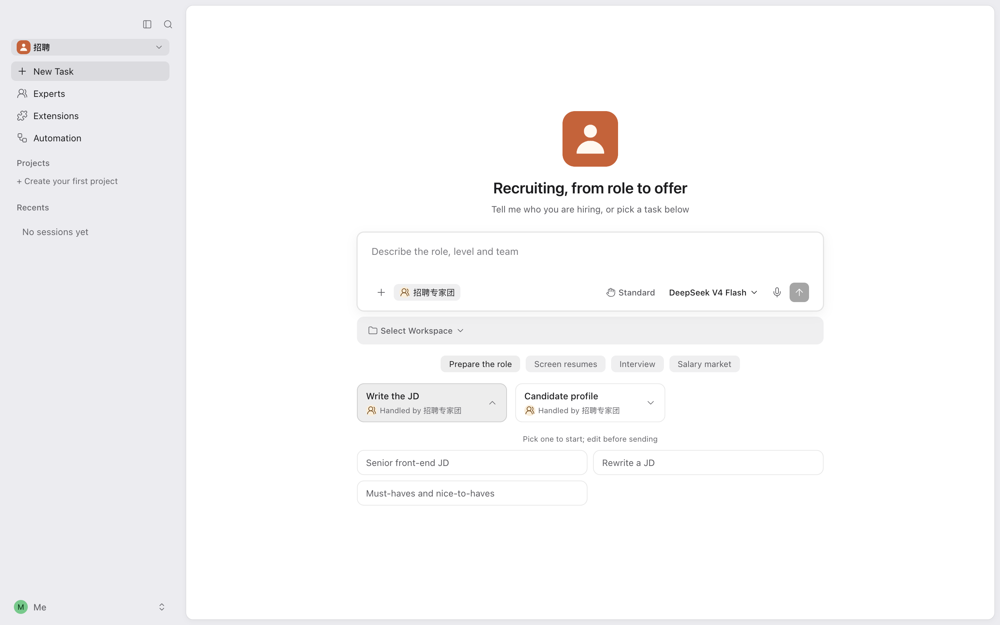
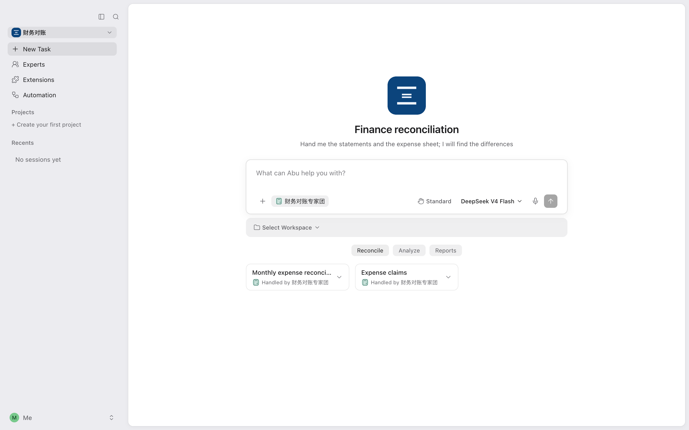
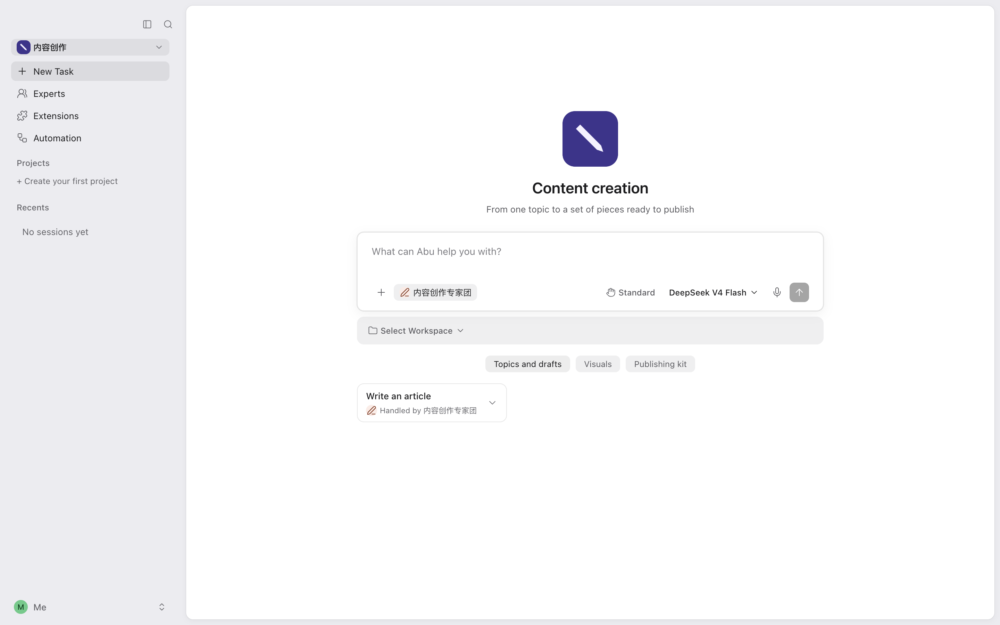
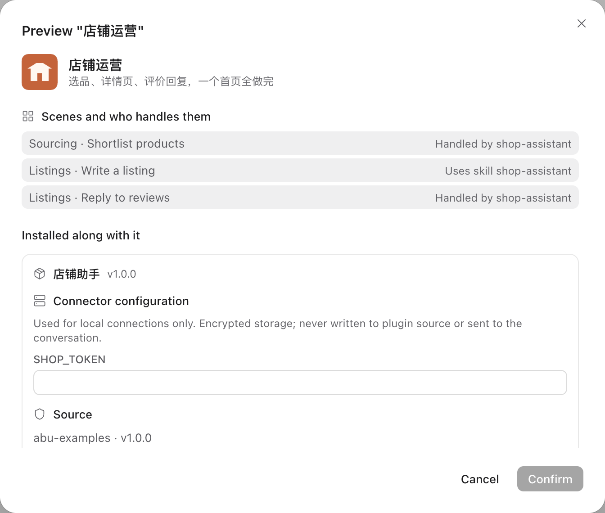
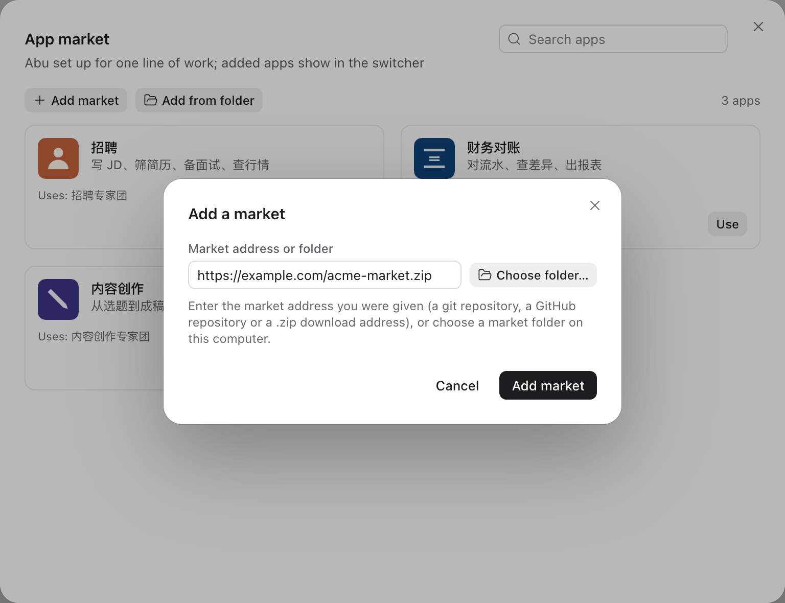
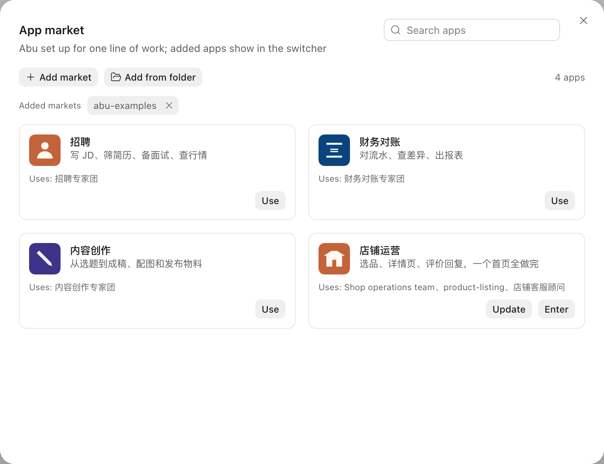

Recruiting
Write JDs, screen resumes, prepare interviews, check the market
Write the JDRank resumesScorecards and notes
You write an app folder. Your customer's Abu gains a home page, scenes and an expert team prepared for that kind of work.
It holds one app file and a few images, and says what the home page shows, which scenes exist and who handles each scene.
Conversations, permission prompts, reading and writing files, delivering files: the app uses what Abu already does.
The app appears in their app switcher, and the plugins it needs are installed along with it.
A git repository or a zip address. After you publish a new version, your customer sees Update.
An app is Abu prepared for one kind of work. Below is Recruiting, an app that ships with Abu, with the five parts this screen shows marked. Recruiting uses no single expert, skill or app web page, so the screen has none of them.

The first thing the app shows, with its name and one line about it.
One task on the home page, such as “Write the JD”. Each scene carries 3 to 6 example prompts (3 in the picture); clicking one fills the input box.
A scene can go to an expert team, where several experts share the work. Every Recruiting scene goes to the recruiting team, and each scene card names it.
A scene can also go to a single expert.
Or a scene can go to a skill. Expert teams, experts and skills come in plugins; the app only names the ones it uses.
The menu on the left follows the app's definition.
Web pages your customer already has can sit in the navigation and open in Abu's main area.
These three apps are installed with Abu. Their app files are in the repository's official market folder, ready to learn from.

Write JDs, screen resumes, prepare interviews, check the market

Match statements, find differences, produce reports

From topic to finished draft, visuals and a publishing kit
The folder holds one app file, app.json, and a few images. To try an idea first, click Create app in Abu and build one in a conversation; that app stays on this computer.
{
"name": "recruiting",
"version": "1.0.0",
"interface": {
"displayName": "招聘",
"shortDescription": "写 JD、筛简历、备面试、查行情"
},
"defaultRun": { "team": "builtin-team:recruiting" },
"home": {
"modes": { "items": [ {
"title": { "en-US": "Prepare the role" },
"scenes": [ {
"title": { "en-US": "Write the JD" },
"templates": [
{ "title": { "en-US": "Senior front-end JD" }, "prompt": { … } },
…
]
} ]
} ] }
}
}In the app market, click Add from folder and pick the app folder. The confirmation page lists who handles each scene, the plugins installed along with it and the connector settings to fill in. When the app file has a mistake, the error gives the full path of that field.

Put the market folder in a git repository, or zip it and host it at a downloadable address. Your customer clicks Add market in the app market, enters the address, finds the app and clicks Use.

You update the repository or the zip. When your customer opens the app market, Update shows beside the app; the steps are the same as the first Use.

Connectors come in plugins. The app names the connectors it needs; while one is not connected, the top of the home page offers Connect.
Put the address in the navigation and the page opens in Abu's main area. It can only stay on the websites the app declares; links to anywhere else open in the system browser.
Scan to add Shawn, the author of Abu, on WeChat with the note “Open Platform”, and tell him about your industry and your customer.